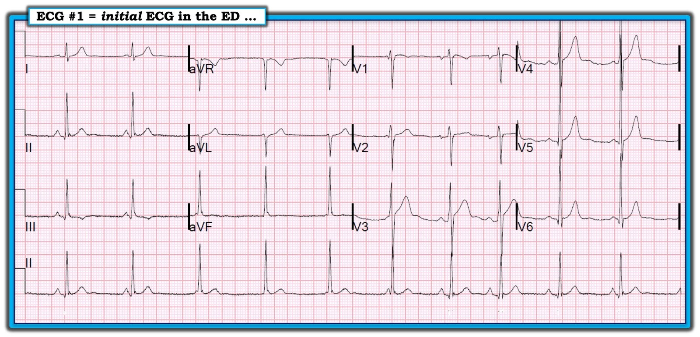
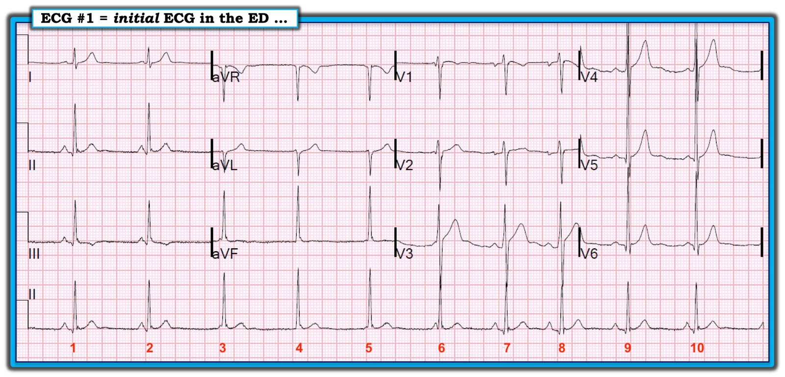
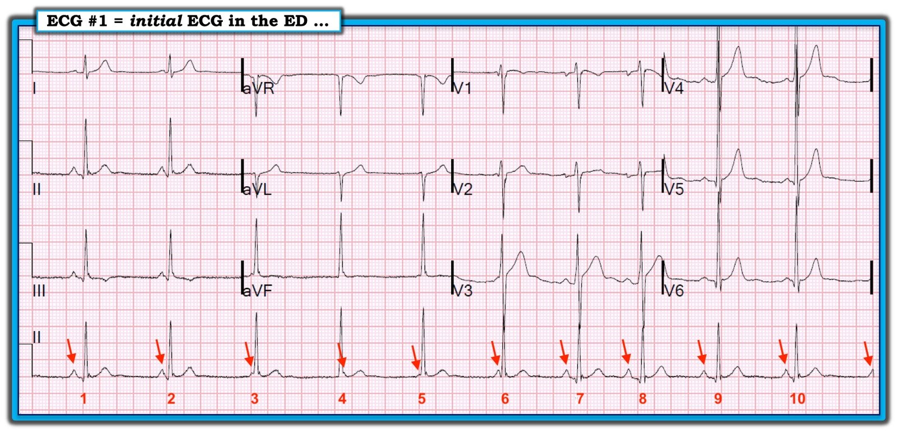
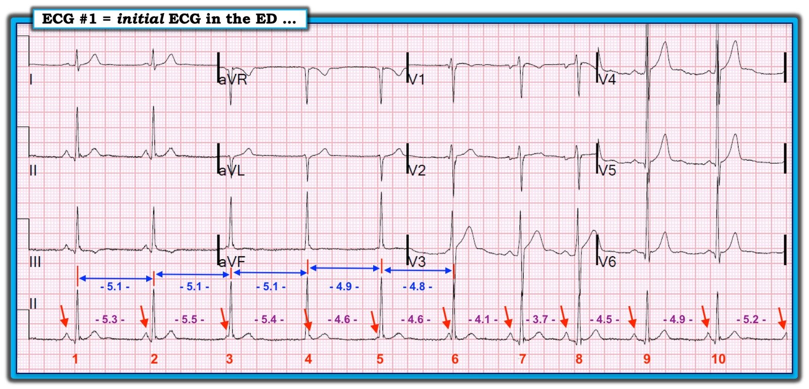

01/02/2019 — Nhịp này là gì?
Bản dịch tiếng Việt của bài "What is the Rhythm?" – Dr. Smith’s ECG Blog. Giữ nguyên toàn bộ 5 hình ảnh của bản gốc.
===============================
Phần trình bày của KEN GRAUER, MD:
===============================
Ca bệnh: Một nam thanh niên trước đó khỏe mạnh đến khoa cấp cứu (ED) vì khó thở và cảm giác đè nặng ngực xảy ra ~3 giờ trước, khi anh đột nhiên cảm thấy tim mình “hẫng một nhịp”, rồi bắt đầu “đập dồn dập”. Anh cảm thấy “choáng váng” (tiền ngất) trong cơn — kèm “cảm giác tim đập rất mạnh”. Anh không thấy đỡ cho đến ~45 phút sau. Những cơn tương tự đã xảy ra trong tháng qua — nhưng không cơn nào kéo dài như vậy. Đáng chú ý, bệnh nhân là một vận động viên năng động. Gia đình có tiền sử “nhịp bộ nối hoặc một nhịp bất thường khác”.
Hình 1 là điện tâm đồ ban đầu của anh được ghi tại khoa cấp cứu.
GỢI Ý:
- Rất nên dùng compa đo (calipers) để đọc nhịp!


CÂU HỎI:
- Nhịp trong Hình 1 là gì?
- Tại sao, nói một cách chặt chẽ, đây không phải là phân ly nhĩ thất “đồng nhịp” (isorhythmic)?
- Tiền sử gia đình có nhịp bất thường liệu có liên quan gì đến ca này không?
- Về mặt lâm sàng — Bạn sẽ làm gì cho bệnh nhân này?
==========================
ĐIỂM THEN CHỐT (PEARL) #1: Cách dễ nhất để nâng cao ngay lập tức kỹ năng đọc rối loạn nhịp của bạn là dùng compa đo. Bác sĩ tim mạch nào không thường xuyên dùng compa đo để đọc các rối loạn nhịp phức tạp — là bác sĩ tim mạch sẽ bỏ sót chẩn đoán nhiều hơn chỉ một vài lần.
- Hiển nhiên, không phải mọi rối loạn nhịp đều phù hợp để dùng compa đo. Bạn thường sẽ biết nguyên nhân của một nhịp nào đó mà không cần đến compa đo. Và, trong tình huống cấp cứu khẩn — thường không có thời gian dừng lại để lấy compa đo ra cho đến khi bạn đã xử trí xong cho bệnh nhân. Dù vậy, compa đo giúp bạn ngay lập tức giỏi hơn. Chúng vượt trội trong đánh giá blốc AV và phân ly nhĩ thất — chúng cho phép xác định ngay một nhịp có đều hay không — và, compa đo vô giá trong việc suy luận xem các nhát khác nhau có được dẫn truyền hay không.
- Dùng compa đo sẽ KHÔNG làm bạn chậm đi. Ngược lại — chỉ với một chút luyện tập, bạn sẽ thấy chúng tăng tốc đáng kể việc đọc nhiều rối loạn nhịp phức tạp — vì bạn có thể đo và so sánh các khoảng ngay lập tức.
ĐIỂM THEN CHỐT (PEARL) #2: Khi bàn về một nhịp phức tạp — Đánh số các nhát giúp ích vô giá trong việc làm rõ đang nói đến nhát nào (Hình 2).


==========================
Đánh giá ban đầu về nhịp: Khi đối mặt với một rối loạn nhịp phức tạp — tôi luôn thích bắt đầu với NHỮNG GÌ TÔI BIẾT chắc là đúng.
- Tôi biết rằng khoảng PR trước nhát #6 quá ngắn để dẫn truyền. Khoảng PR trước nhát #2 cũng quá ngắn để dẫn truyền. Điều này gợi ý có phân ly nhĩ thất ít nhất là thoáng qua — nghĩa đơn giản là có các sóng P xoang không liên quan đến các phức bộ QRS lân cận.
- Khoảng PR dài nhất trong Hình 2 xuất hiện trước nhát #8 và 9. Khoảng PR đứng trước 2 nhát này bằng nhau và bình thường — và sóng P ở chuyển đạo II này dương. Điều này gợi ý nhát #8 và 9 nhiều khả năng nhất là nhát dẫn truyền từ xoang.
- Dường như có dấu hiệu của RẤT NHIỀU sóng P trên dải nhịp chuyển đạo II dài này. ĐIỂM THEN CHỐT (PEARL) #3: Làm rõ một nhịp phức tạp thường DỄ HƠN nhiều NẾU bạn có thể đánh dấu hoạt động nhĩ nền. Chúng tôi làm điều đó trong Hình 3.


==========================
Đánh giá Hình 3: Mặc dù một số sóng P được đánh dấu bằng mũi tên ĐỎ trong Hình 3 bị che khuất một phần bởi các phức bộ QRS lân cận — nhìn chung hình thái sóng P có vẻ giống nhau trên toàn bộ bản ghi này. Do đó, có một cơ chế xoang nền.
- NHƯNG — khoảng P-P của các mũi tên ĐỎ này thay đổi trên toàn bộ bản ghi! Điều này cho chúng ta biết nhịp nền là một loạn nhịp xoang khá rõ rệt. Cần nhấn mạnh rằng tự bản thân nó — loạn nhịp xoang không phải là một nhịp bất thường ở một người trẻ tuổi vốn khỏe mạnh.
- Cả 10 phức bộ QRS trong bản ghi này đều hẹp. Các phức bộ QRS này đều trông giống nhau — mặc dù có những khác biệt nhỏ về hình thái QRS ở một số nhát. Nhưng việc có một số nhát dẫn truyền từ xoang — cũng như nhiều nhát khác có khoảng PR chắc chắn quá ngắn để dẫn truyền — cho chúng ta biết có các nhát thoát bộ nối (tức là, ít nhất các nhát #3, 4, 5 và 6 — đều là nhát bộ nối).
==========================
Tổng hợp những gì chúng ta biết cho đến nay: Nhịp nền là nhịp chậm xoang kèm loạn nhịp xoang rõ rệt. Do ổ tạo nhịp xoang chậm lại — tần số xoang thỉnh thoảng giảm xuống dưới tần số nội tại của ổ tạo nhịp thoát nút AV. Điều này dẫn đến phân ly nhĩ thất thoáng qua — cho đến khi nút xoang tăng tốc đủ để vượt qua tần số thoát nội tại của nút AV. Hiện tượng này được biết đến nhiều nhất với tên gọi Phân ly nhĩ thất do “Mặc định” (Default) — tức là, sự “mặc định” (default) của ổ tạo nhịp xoang do nhịp chậm xoang rõ rệt, tạm thời cho phép ổ tạo nhịp thoát nút AV tiếp quản. Chúng tôi nhấn mạnh các điểm MẤU CHỐT sau:
- Nhịp trong Hình 3 không phải là “phân ly nhĩ thất”. Phân ly nhĩ thất không bao giờ là nguyên nhân của một nhịp. Thay vào đó, như chúng tôi đã nêu ở trên — nhịp này là nhịp chậm xoang kèm loạn nhịp xoang rõ rệt. Phân ly nhĩ thất xuất hiện là bởi vì tần số chậm lại rõ rệt.
- Hoàn toàn không có bằng chứng nào về bất kỳ dạng blốc AV nào. Đó là vì chúng ta không bao giờ thấy sóng P nào không dẫn truyền mặc dù có đủ cơ hội để dẫn truyền! Thay vào đó, lý do khiến một số sóng P không dẫn truyền — đơn giản là vì khoảng PR quá ngắn.
- Đây không phải là phân ly nhĩ thất “đồng nhịp”. Chữ “iso” — xuất phát từ chữ Hy Lạp “isos” — có nghĩa là “bằng nhau”. Phân ly nhĩ thất “đồng nhịp” (isorhythmic) thực sự là một hiện tượng ít gặp, trong đó có các ổ tạo nhịp nhĩ và thất độc lập đang phát nhịp ở tần số gần như giống hệt nhau (tức là, tần số “bằng nhau” ). Thường gặp nhất là có một nhịp xoang (nhĩ ) nền cạnh tranh với một nhịp nút AV phát nhịp ở tần số gần như giống hệt. Hiệu ứng giống như một cuộc đua ngựa — trong đó một nhịp tạm thời “dẫn đầu” (tức là, tiếp quản nhịp) — cho đến khi nó hơi chậm lại, hoặc cho đến khi nhịp kia tăng tốc vừa đủ để tiếp quản nhịp — và rồi quá trình giành qua giành lại này lại bắt đầu từ đầu. Đây không phải là những gì chúng ta thấy ở Hình 3 — vì có sự khác biệt rõ rệt giữa khoảng P-P và R-R trên phần lớn dải nhịp chuyển đạo II dài.
==========================
LƯU Ý — Điều quan trọng là cần hiểu rằng có 3 Nguyên nhân tiềm năng của Phân ly nhĩ thất:
- Phân ly nhĩ thất do một dạng blốc AV độ 2 hoặc độ 3;
- Phân ly nhĩ thất do “Chiếm quyền” (Usurpation) — trong đó các sóng P tạm thời không dẫn truyền vì một nhịp bộ nối gia tốc tiếp quản chức năng tạo nhịp (vì nó nhanh hơn nhịp xoang nền); và/hoặc,
- Phân ly nhĩ thất do “Mặc định” (Default) — trong đó một nhịp thoát bộ nối tiếp quản theo kiểu “mặc định” (tức là, do nút SA chậm lại — như xảy ra trong ca này).
==========================
Nhưng ca này còn NHIỀU HƠN thế … (CẢNH BÁO: Phần tiếp theo liên quan đến các khái niệm rối loạn nhịp nâng cao! ).
CÂU HỎI:
- Điều gì là không điển hình ở nhịp trên chuyển đạo II dài của Hình 3, so với những gì chúng ta thường thấy nhất khi có các nhát thoát bộ nối?
GỢI Ý:
- Câu trả lời được tiết lộ trong Hình 4, trong đó việc đo cẩn thận bằng compa cho biết thời gian của mọi khoảng P-P (bằng chữ màu TÍM) — và thời gian của khoảng R-R đứng trước mỗi nhát trong 6 nhát đầu tiên (bằng chữ màu XANH DƯƠNG). Bạn thấy gì?


==========================
Đánh giá Hình 4: Phần lớn thời gian, tần số nội tại của ổ tạo nhịp thoát bộ nối là hằng định. Chúng ta thường có thể dùng dấu hiệu này để giúp xác định nhát nào là nhát bộ nối so với nhát được dẫn truyền — vì khoảng R-R đứng trước phần lớn các nhát trong nhịp thoát bộ nối là như nhau. Nhưng điều này không đúng trong Hình 4 — vì mặc dù chúng ta nghĩ rằng các nhát từ #2 đến 6 đều là nhát thoát bộ nối (vì chúng đều có khoảng PR đứng trước quá ngắn để dẫn truyền) — khoảng R-R đứng trước lại thay đổi từ 4,8 đến 5,1 ô lớn.
- ĐIỂM THEN CHỐT (PEARL) #4: Phức bộ QRS của các nhát thoát bộ nối đôi khi trông hơi khác một chút so với QRS của các nhát dẫn truyền từ xoang. Lý do là đường đi của xung điện ở một nhát xoang — có thể hơi khác với đường đi của một nhát bộ nối khởi phát ở vị trí thấp hơn hoặc lệch về bên này hay bên kia của nút AV. Chúng ta thấy điều này trong Hình 4. Chúng ta biết nhát #8 và 9 là nhát dẫn truyền từ xoang. Chúng ta thấy một sóng q khởi đầu nhỏ nhưng chắc chắn có mặt ở các nhát này mà không thấy ở các nhát bộ nối #3, 4, 5 và 6. Ngoài ra, biên độ sóng R của các nhát bộ nối #4 và 5 rõ ràng cao hơn sóng R của các nhát dẫn truyền từ xoang #8 và 9! ĐIỂM THEN CHỐT này đôi khi vô giá trong việc cho chúng ta biết nhát nào trên một bản ghi có phân ly nhĩ thất là nhát dẫn truyền từ xoang so với nhát có nguồn gốc bộ nối so với nhát hỗn hợp.
- Vậy TẠI SAO phức bộ QRS của nhát #10 trông giống hệt QRS của các nhát dẫn truyền từ xoang #8 và 9, mặc dù có khoảng PR đứng trước ngắn hơn? Tôi tin rằng câu trả lời là bệnh nhân này biểu hiện một thành phần của blốc AV do cường phế vị (vagotonic) (dù chưa thể hiện rõ blốc AV … ).
==========================
Tôi bàn chi tiết về hiện tượng Blốc AV do cường phế vị (vagotonic) trong CA NÀY. Để ngắn gọn ở đây — Chỉ cần nói rằng một số người vốn hoàn toàn khỏe mạnh biểu hiện tăng rõ rệt trương lực phế vị, đến mức đôi khi có thể thấy nhịp chậm đáng kể kèm các dạng blốc AV khác nhau mặc dù hoàn toàn không có bệnh tim cấu trúc nền. Trong số các đặc điểm của hội chứng này có loạn nhịp xoang rõ rệt, thay đổi tần số của các ổ tạo nhịp thoát, khoảng PR thay đổi ở các nhát dẫn truyền từ xoang (điều mà nếu không thì khó giải thích) — và đôi khi, các dạng blốc AV thoáng qua khác nhau.
- Quay lại Hình 4 — tôi tin rằng việc phức bộ QRS của nhát #10 giống hệt QRS của các nhát dẫn truyền từ xoang đã biết #8 và 9 — cho chúng ta biết nhát #10 nhiều khả năng nhất là nhát dẫn truyền từ xoang với khoảng PR ngắn hơn một chút. Điều tương tự có lẽ cũng đúng với nhát #1 và 7 — mỗi nhát đều có khoảng PR đứng trước hơi ngắn hơn khoảng PR của các nhát dẫn truyền từ xoang đã biết #8 và 9. Khó biết về nhát #2 (QRS trông giống một nhát dẫn truyền từ xoang — nhưng khoảng PR lại cực kỳ ngắn … ). Nhưng nhìn chung, xét đến sự thay đổi các khoảng R-R đứng trước các nhát thoát bộ nối đã biết #3, 4, 5 và 6 — tổng hợp các dấu hiệu gợi ý có ảnh hưởng phế vị rất mạnh tác động lên bệnh nhân này!
- Việc có tiền sử gia đình về một nhịp “bất thường” nào đó — gợi ý có thể có yếu tố gia đình trong tình trạng tăng trương lực phế vị vốn có của bệnh nhân này.
- Cuối cùng — các triệu chứng của bệnh nhân này dường như không tương xứng với nhịp mà chúng ta thấy trên Hình 4. Xét cho cùng, không có cơn nhịp nhanh nào, không có nhịp chậm sâu, và cho đến nay chưa có dấu hiệu blốc AV. Theo dõi sát là điều thiết yếu. Theo dõi Holter có thể sẽ phát hiện những rối loạn nhịp khác đáng lo ngại hơn trong suốt một ngày. Dù vậy, mặc dù blốc AV do cường phế vị thường có tiên lượng lành tính — việc bệnh nhân này có triệu chứng nhiều như vậy (với những gì nghe như tiền ngất) đáng được chuyển đến bác sĩ điện sinh lý (EP) để đánh giá kỹ lưỡng hơn và phân tầng nguy cơ.
ĐIỀU CỐT LÕI — Giải thích đầy đủ mọi dấu hiệu có trên điện tâm đồ của ca này quả thực là phức tạp! Tôi sẽ rất vui mừng với bất kỳ ai đánh giá nhịp trong Hình 1 là nhịp chậm xoang và loạn nhịp xoang rõ rệt, đôi khi khiến xoang chậm lại đủ để gây phân ly nhĩ thất kèm các nhát thoát bộ nối. Tôi nghĩ điều quan trọng là cần hiểu rằng không có bằng chứng blốc AV trong Hình 1. Dù vậy — tôi nghĩ sẽ hữu ích nếu biết đến hiện tượng blốc AV do cường phế vị, mà dù ít gặp — sẽ thỉnh thoảng được gặp bởi những người làm cấp cứu (Xem lại CA NÀY có thể giúp hiểu sâu hơn). Trong ca cụ thể này, mặc dù không thấy blốc AV trong Hình 1 — có một số dấu hiệu điện tâm đồ, trong bối cảnh các triệu chứng đáng kể mà bệnh nhân này trải qua, hướng đến sự tăng trương lực phế vị vốn có, đáng được chuyển đi để đánh giá đầy đủ hơn.
==========================
XEM THÊM:
- Để xem một ví dụ khác về cách tiếp cận từng bước của tôi khi đánh giá một ca phân ly nhĩ thất — BẤM VÀO ĐÂY.
- Dành cho những ai muốn xem Bài ôn tập bằng VIDEO (58 phút) về Chẩn đoán blốc AV & phân ly nhĩ thất trên điện tâm đồ— BẤM VÀO ĐÂY. Nếu bạn bấm vào SHOW MORE (bên dưới video trên trang YouTube) — bạn sẽ thấy Mục lục có liên kết của toàn bộ nội dung trong video. Phần về phân ly nhĩ thất BẮT ĐẦU TẠI ĐÂY.